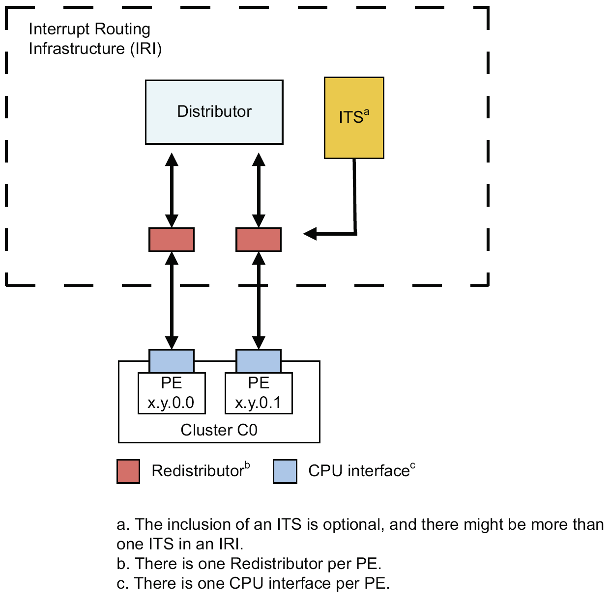

Interrupts and ARM GIC Architecture
Reference
Categorization
- Hardware vs. Software
- Hardware: usually caused by peripheral or other processors
- IRQ: maskable interrupt
- NMI: non-maskable interrupt
- For highest priority tasks, like times, especially wathdog timers
- Wathdog timer: a timer has to be reset by software on purpose periodically, otherwise it means the software has gone into some hanging situation and will trigger watchdog routine to recover or reboot.
- For highest priority tasks, like times, especially wathdog timers
- IPI: inter-processor interrupt
- Software: caused by exception or special instructions that used to implement system calls
- Hardware: usually caused by peripheral or other processors
- Interrupt vs inter-process communication signal
- Interrupt: mediated by the processor (hardware); handled by the kernel
- Signal: mediated by the kernel (through systeam call); handled by processes
- Such as: SIGSEGV, SIGBUS, SIGILL, SIGFPE
- Precise vs imprecise interrupt
- Precise interrupts has
- PC and other architecture states are saved, so after interrupt handler is done the current process can resume
- All instructions before the time point have fully executed, and no instructions beyond has been executed (or they are killed)
- Precise interrupts has
- Triggering methods
- Physical interrupt
- Level-triggered vs. Edge-triggered
- Message-signaled interrupts (or message-based interrupt as in ARM’s term)
- Supported by PCI 2.2 and PCI-Express
- Physical interrupt
MSI (Message Signaled Interrupts)
- Triggerred by write to a memory address
- Can be converted from/to physical interrupt
- In-band vs. out-of-band
- Dedicated interrupts wires are considered out-of-band, while MSI is in-band.
- Need hardware to convert MSI to physical interupts
- Although use in-band network to transmit interrupt info, but it can only be used to descript the interrupt (such as source, priority) while cannot be used to carry data.
- Pros & cons
- More scalable
- Multi-sources to multi-processors
- Simpler, cheaper, more reliable (no interference noises)
- Not compatible with devices that need physical interrupts
- Need software support
- More scalable
Performance issue
- Livelocks
ARM GIC
Categories
| LPI (locality-specific peripheral interrupt) | PPI (private peripheral interrupt) | SPI (shared peripheral interrupt) | SGI (software generated interrupt) |
|---|---|---|---|
| From peripheral to local PE (processing element) | From peripheral to a single, specific PE | From peripheral to distributor, then to PE that can accept this type of interrupt | From PE to PE, typically used for inter-processor communication |
| Edge-triggered behavior, message-based (???) | Edge-/level-triggered, need explicit deactivation | edge-/level-triggered, need explicit deactivation | Edge-triggered, need explicit deactivation |
| Can be routed with ITS | Cannot be routed with ITS | Cannot be routed with ITS | Cannot be routed with ITS |
| Non-secure | Secure or non-secure | Secure or non-secure | Secure or non-secure |
Q: if need deactivation, then there has to be some ackknowledge mechanisms. what are they???
Interrupt handling
- States
- LPI: inactive –> pending -(recognized)-> inactive
- PPI/SPI/SGI: inactive -(assert)-> pending -(recognized)-> active/active-and-pending -(deassert)-> inactive
- Models of interrupt handler
- Targeted distribution model
- Software specify the target PE to handle this interrupt
- Targeted list model (for SGI only)
- Multi-PE receive/handle the interrupt independently
- 1 of N model (for SPI only)
- Targeting multi-PE, but handled by only one of them
- Depends on implementation
- Targeted distribution model
Interrupt signals and data structure
- INTID (interrupt identifier)
- If no LPI, 10-bit (compatible with earlier version GIC architecture)
- If with LPI, INTID can be 14-bit to 24-bit
- Exception levels
- ???
- ???
Hardware components

- Distributer
- Handles interrupt priority, and distribute to redistributor
- Provides programming interface for controlling SPI, throught
GICD_registers - Q: the distributer can be hierarchical or not?
- Don’t need to, because they can be connected using free-flowing interconnect or system interconnect, refer to GIC-600 TRM 1-14.
- Q: why distributer needs ACE-lite port instead of AXI only? Does interrupt involves with cache coherency problem?
- For ACE-Lite slave port, cache coherency related ports are used to identify a cache maintanance operation; for ACE-Lite master port, they are used to issue shared-read if configured so. Refer to GIC-600 TRM 2-25
- ITS (interrupt translation service)
- Translate MSI (message-signaled interrupts) from PICe RC (root complex)
- Routes LPIs to target redistributor
- Routing table is configured by software
- EventID –> INTID
- Routing table is configured by software
- Redistributor
- One per PE
- Handles interrupt priority, control and LPI
- Provides programming interface for all sort of control, masking, priority settings, throught
GICR_registers
- CPU interface
- One per PE
- Translation from physical interrupts to message-based interrupt
- Provide register interface for general control, priority, ack, and etc.
- Interrupt wbypass for legacy interrupt signal